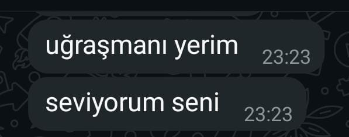

mükafatısın
Gözlerini hiç görmedim ama Bakışlarınla sarıldım gecelere. Sesini duymadım belki, Ama içimde yankılandı her kelime. Uzaklar varmış, engeller varmış, Ne çıkar? Ben seni kalbimde yaşatmayı Çoktan öğrendim artık.
Bir ay kaldı Zeynep'imm, sonra gözlerinle uyanacağım,Yüzünde güneŞ değil, huzuru bulacağım.
Kahverengi gözlerin anlatır ya sessizce,
Ben o bakışta her şeyi unutur, sadece sana bağlanacağım.
Geceler eksik, kelimeler yetersiz sensizken,
Hayalinle sarılıp geçiyorum her özlemden.
Bir ay sonra ellerin ellerimde olunca,
Kalbim “işte şimdi tam” diyecek içten içe, derinden.
Emin ol senin için çok daha fazla uğraşacağım kadınım ...
SENİ ÇOK SEVİYORUM HATUNUMMMM